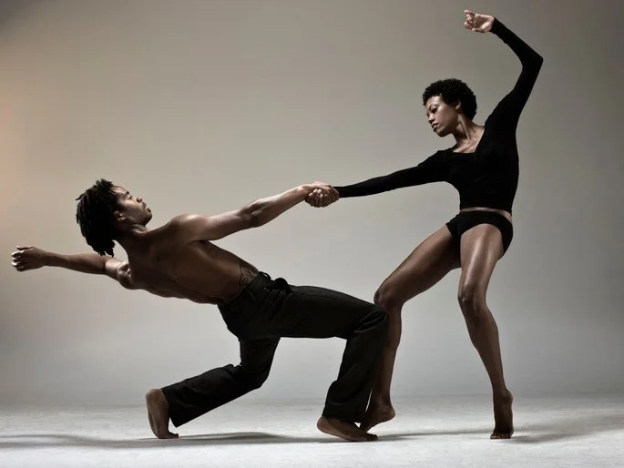
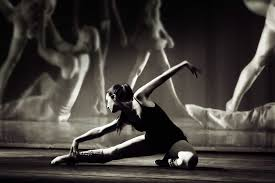
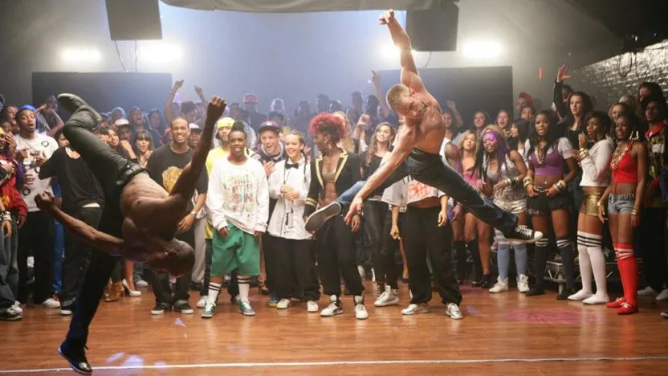

"Meus passos são a correnteza que me leva a explorar novos caminhos, ritmos e emoções. Dançar é se sentir livre como um pássaro e feroz como um leão."

A modalidade de dança “Dança Contemporânea” surge nos anos 60 nos EUA. Nasce no segmento da dança moderna, mas não possui uma técnica única estabelecida, todos os tipos de pessoas podem praticá-la. Sua técnica é tão abrangente que não delimita estilos de roupas, músicas, espaços ou movimentos. Não há mecanismos definidos, há antes processos e formas de criação. Emerge uma nova noção de corporalidade, buscando um sentido mais experimental, menos estratificado. Não existe um corpo ideal e sim um corpo multicultural que tem várias referências. O que importa é a transmissão de sentimentos, idéias e conceitos. A dança contemporânea é uma forma de expressão artística que combina elementos de vários estilos de dança, como ballet clássico, dança moderna, jazz e danças étnicas.

Desenvolvida por norte-americanos a partir de danças africanas, a modalidade de dança “Jazz” foi uma denominação que aparece pela primeira vez em 1917. Durante os anos 20, foi absorvida pelo show-business e gradualmente evoluindo, transformando-se em técnica e estilo de códigos próprios.
Hanya Holm pesquisou o ritmo sincopado do negro americano e encontrou no jazz a inspiração para a pesquisa dos seus movimentos; criando assim, o estilo Jazz.
A aula de Modern Jazz é constituída por movimentos coreografados com base na criação livre, usando os princípios do ballet clássico, passando pelo ballet moderno.
É uma forma de dança extremamente atual, intimamente ligada à expansão comercial da Dance Music. Nas aulas de jazz, os alunos trabalham intensamente o físico, alongamento, força muscular, coordenação motora , musicalidade, postura e muita animação.

Mesclando movimentos coordenados e harmoniosos, o Street Dance (dança de rua) é uma atividade que teve sua origem nos guetos americanos na década de 30 e ganhou notoriedade com a explosão do movimento funk, principalmente graças às danças do cantor James Brown.
O street dance trabalha habilidades de coordenação, equilíbrio e ritmo, desenvolvendo a expressão corporal e conscientização de equipe, o que a faz desta atividade uma aula desafiadora tanto para o aluno quanto para o professor.
No street dance, movimentos básicos, naturais, como andar, saltar, toque-lado, step touch são plenamente explorados, assim como movimentos mais complexos, como o contratempo, a combinação braço e perna, movimentos finos de quadril, de corpo tipo onda, e ombro com deslocamento.